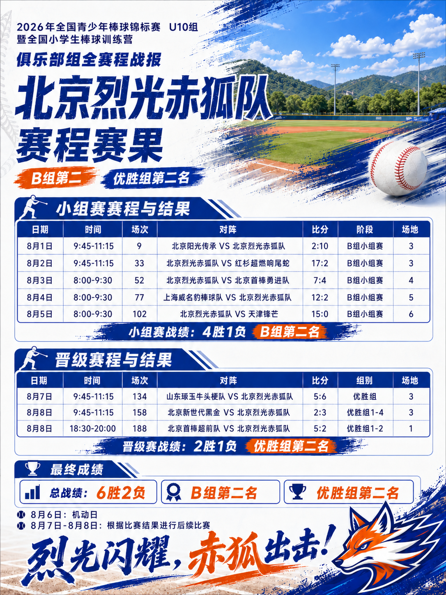

杨逍墨
杨逍墨是这届烈光毫无疑问的进攻 MVP。 8 个打数就敲 5 安，包括二垒、三垒、本垒各 1 支，最夸张的是 21 个打席拿到 12 次四坏 + 1 次触身，OBP .857。而且只被三振 1 次，还有 5 次盗垒。这个数据说明不是单纯“打得好”，而是选球、击球质量、长打、跑垒四项全有。唯一需要注意的是 8 AB 样本仍然不大，但表现确实断层领先。

| 球员 | 进攻核心数据 | OPS | 跑垒 | 守备 | 投手 |
|---|---|---|---|---|---|
| 杨逍墨 63 | 21 PA / 8 AB，8R 5H，1二垒+1三垒+1HR，12BB，6RBI | 2.232 | 5SB / 2CS | 5PO 3A 0E | 1.2IP，ERA 7.20 |
| 张景奕 13 | 10 PA / 8 AB，6R 4H，2BB，3RBI | 1.100 | 3/1 | 5PO 0E | — |
| 周立行 66 | 21/15，10R 6H，1二垒，5BB，4RBI | 1.038 | 5/1 | 6PO 8A 2E，.875 | 0.1IP |
| 李牧白 11 | 5 PA / 0 AB，5BB，3R，1RBI | 1.000 | 1/1 | 2PO 1A 0E | 3IP，ERA 4.00，5K |
| 程思乐 3 | 19/16，7R 6H，1三垒，2BB，4RBI | .944 | 0/0 | 27PO 10A 1E，.974 | — |
| 田雨稷 5 | 20/16，9R 5H，3BB，4RBI | .763 | 2/0 | 3PO 7A 0E | 8.2IP，ERA 0.69，WHIP 1.38 |
| 刘景天 4 | 7/6，2R 2H，1BB，1RBI | .762 | 0/1 | 2PO 1A 0E | 3.1IP，ERA 5.40，6K |
| 高驰庭 12 | 15/12，1R 3H，1二垒，2BB | .690 | 0/0 | 3PO 1A 2E | 8IP，3-0，10K，ERA 5.25 |
| Max Shen 31 | 21/18，8R 5H，3BB，8RBI | .659 | 9/0 | 7PO 9A 3E，.842 | 1.2IP，ERA 14.40 |
| 瞿裕桐 18 | 6/4，1R 1H，1BB，1RBI | .650 | 1/0 | 1PO 0E | 1IP，0H 0R |
| 陈诗恩 22 | 8/5，4R 1H，2BB | .629 | 1/0 | 无守备机会 | — |
| 闫勋捷 26 | 8/7，1R 1H，1二垒，1RBI | .536 | 0/0 | 9PO 0E | 3IP，ERA 4.00 |
| 付昌泽 24 | 15/11，2R 1H，1二垒，3牺打，2RBI | .349 | 0/0 | 25PO 1A 2E，.929 | — |
| 孙嘉泽 29 | 4/3，0H，1BB，2K | .250 | 0/0 | 1PO 0E | 1.1IP，0H 0R，2K |
全队 8 场进攻数据是 180 PA、129 AB、62 分、40 安打，打击率 .310、上垒率 .486、长打率 .403、OPS .889；41 次保送、25 次三振，27 次盗垒成功/6 次失败。也就是说这支烈光最明显的特点不是纯长打，而是上垒能力 + 跑垒侵略性。 投手组累计 32 局，32 失分、25 自责分、37 安打、28 保送、32 三振，ERA 4.69、WHIP 2.03，整体投手端明显没有进攻端稳定。
杨逍墨是这届烈光毫无疑问的进攻 MVP。 8 个打数就敲 5 安，包括二垒、三垒、本垒各 1 支，最夸张的是 21 个打席拿到 12 次四坏 + 1 次触身，OBP .857。而且只被三振 1 次，还有 5 次盗垒。这个数据说明不是单纯“打得好”，而是选球、击球质量、长打、跑垒四项全有。唯一需要注意的是 8 AB 样本仍然不大，但表现确实断层领先。
田雨稷是投手端绝对核心，而且两端都很稳定。 全队最多的 8.2 局，只有 1 个自责分，ERA 0.69，只给 2 次保送、7K。相比其他主力投手，这是最明显的优势：控制住免费上垒。打击也有 .313/.450/.313，9 次得分全队第二，属于真正的双向核心。烈光如果只评一个“最不可替代球员”，我会在他和杨逍墨之间选。
周立行是最稳定的发动机型打者。 全队最多的 10 得分，.400/.571/.467，21 PA 只有 1K，同时 5BB、5SB。杨逍墨是爆炸性最强，周立行则更像持续制造进垒和得分机会的人。守备 16 次机会有 2E，.875，是这次比赛相对可以提升的部分；投球那 0.1 局 4ER 样本太小，不值得拿 ERA 72 去评价他的投手能力。
程思乐的价值很容易被 OPS 低估——其实他是非常强的全能核心。 .375/.444/.500，19 PA 只有 1 次三振，4RBI；同时守备承担量全队最大，27 PO + 10 A，只有 1E，守备率 .974。以如此多的守备机会还能保持这个失误率，是非常漂亮的数据。综合攻守，我会把他排在全队前四。
张景奕是这届最有效率的角色球员之一。 8 AB 4H，.500/.600/.500，6 次得分、3 次盗垒，而且只有 1K。没有长打，说明主要靠上垒、联系和跑垒贡献。问题只有一个：10 PA 太少，所以不宜直接说他是“.500 水平打者”，但这届比赛完成度很高。
Max Shen 的价值主要在得分制造和跑垒。 8 分、全队最高的 8 RBI，更夸张的是 9 次盗垒、0 次失败。但打击本身 .278/.381/.278，没有长打；守备 19 次机会 3E，投手又出现 6BB、6WP，所以他的特点非常鲜明：进攻跑垒价值高，但防守和控球是最明确的提升点。
高驰庭属于“球威好、控球还要磨”的投手。 8 局 10K 是全队最高三振数，3-0 也很漂亮；问题是 8BB，导致 ERA 5.25、WHIP 1.88。如果能把保送从每局接近 1 个压下来，投球数据会有明显跃升。打击端 .250/.357/.333 属于够用，但不是主要价值来源。
刘景天也是类似的高三振潜力型。 仅 3.1 局就 6K，三振效率实际上很高；同时 3BB、2WP，ERA 5.40。也就是说问题不是“打者打不到球吗”，恰恰相反，他有让打者挥空的能力，主要要解决好球率和球数效率。进攻 6 AB 2H，样本小但表现不差。
李牧白的数据非常有意思。 5 个打席居然 5 次全部四坏，所以 0 AB、OBP 1.000，还跑回 3 分。这不是所谓“打击率 0 很差”，恰恰说明这几次出场选球非常有效。投球 3 局 5K、没有四坏也值得肯定，但被打 6 安，所以是“控球好、被击球质量偏高”。
瞿裕桐属于小样本但完成任务很干净。 打击 .250/.400，1 次盗垒；投手 1 局面对 3 人，0 安打、0 保送、0 失分。目前样本不足以评价上限，但作为替补/短局投手，这届比赛交出的结果是合格甚至偏好的。
闫勋捷比较典型的是工具型贡献。 打击 7 AB 1H，不过这支安打是二垒打；守备 9 次处理没有失误。投球 3 局 ERA 4.00，但 WHIP 2.67，说明虽然最终失分没有爆掉，垒上跑者其实比较多。未来最需要降低安打+保送造成的交通。
陈诗恩的核心贡献不是安打，而是上垒和得分。 5 AB 只有 1H，但 8 PA 有 2BB，OBP .429，最后跑回 4 分。3 次三振偏多，样本又只有 8 PA，所以目前更像有效的轮换/功能型打者。
付昌泽这届明显是“战术型打者”。 11 AB 只有 1H，OPS .349 是主力里偏低的，但他有 3 次牺牲触击，全队最多，说明实际承担的任务跟普通中心棒次不一样；守备又有 28 次处理机会，属于承担大量防守工作的球员。因此不能只拿打击率评价，但纯进攻能力确实是下一步最需要提高的地方。
孙嘉泽打击端这次机会太少且没打开。 只有 4 PA、3 AB，0H、2K，这个样本没必要下太重结论。反而投手端很值得继续观察：1.1 局没有被打安打、没有失分、2K；但同时 3BB、2WP，所以跟刘景天类似，结果很好，过程里最大的课题依旧是控球。
整体看，烈光这届的结构其实挺清楚：杨逍墨负责爆发，周立行负责持续上垒和得分，程思乐是攻守枢纽，田雨稷是投手轴心；高驰庭、刘景天则提供三振能力。 全队 41BB 对 25K、27 次成功盗垒，已经把“选球+速度”打成了明显特色；真正拉开与冠军组强队差距的地方，我更倾向于认为是投手整体控球和守备稳定性，而不是打击。
基于数据统计，以下是对这支球队和每位队员的详细分析：
| 指标 | 数值 | 评价 |
|---|---|---|
| 团队打击率 | .310 | 非常优秀，远超一般青少年水平 |
| 团队上垒率 | .439 | 极佳，选球纪律性好 |
| 团队长打率 | .403 | 中等偏上，长打能力有提升空间 |
| 团队OPS | .842 | 整体进攻火力强劲 |
| 盗垒成功率 | 81.8% (27/6) | 跑垒侵略性强且效率高 |
| 团队ERA | 约 3.80 | 投手群整体合格，有王牌坐镇 |
| 团队K/9 | 6.92 | 三振能力一般，偏 contact 型投手群 |
总体判断：这是一支进攻驱动型球队，上垒能力强、跑垒积极，但长打火力相对集中在少数球员；投手群由一位低ERA王牌领衔，其余投手吃局数能力不错但压制力参差；守备有明确的核心人物。
| 球员 | 核心标签 | 关键数据 | 深度解读 |
|---|---|---|---|
| 杨逍墨 63 | 绝对进攻核心 / 上垒机器 | OPS 2.232，AVG .625，OBP .810，BB% 57% | 全队唯一OPS破2的球员。8个打数打出5支安打+1二垒+1三垒+1HR，选球极其出色（21打席12保送）。唯一短板：盗垒成功率71%（5/2）有提升空间；投球ERA 7.20，建议专注打击。 |
| 张景奕 13 | 高效率得分手 | OPS 1.100，10PA得6分 | 样本虽小但效率惊人，每1.7个打席就得1分。无失误，守备稳定。 |
| 周立行 66 | 全能战士 | OPS 1.038，10R全队最高，5SB/1CS | 21PA大样本下保持高产出，得分能力第一，跑垒成功率高（83%），守备范围大（6PO+8A）。注意：2次失误需控制，守备率.875有提升空间。 |
| 球员 | 核心标签 | 关键数据 | 深度解读 |
|---|---|---|---|
| 田雨稷 5 | 王牌投手 / 终结者 | 8.2IP，ERA 0.69，WHIP 1.38 | 全队投球局数最多、ERA最低，是球队的定海神针。特点：0三振说明不靠三振出局，而是制造软弱 contact 让守备处理，对守备依赖度高。进攻端也有贡献（9R，2SB）。 |
| 高驰庭 12 | 胜投王 / 吃局数型 | 8IP，3-0，10K，ERA 5.25 | 与田雨稷并列投球最多的"双 ace"之一，三振能力全队最强（K/9=11.25）。问题：ERA 5.25偏高，说明被打出不少长打或保送，属于"能赢但过程惊险"的类型。 |
| 李牧白 11 | 三振型后援 | 3IP，ERA 4.00，K/9=15.0 | 纯选球型打者（5PA全部保送，OBP 1.000），投球三振率极高，适合关键时刻上场制造挥空。 |
| 刘景天 4 | 高K后援 | 3.1IP，K/9=17.42 | 三振率全队最高，但ERA 5.40也最高，属于"要么三振要么被打爆"的极端型投手，适合短局数救援。 |
| 球员 | 核心标签 | 关键数据 | 深度解读 |
|---|---|---|---|
| 程思乐 3 | 守备铁闸 / 内野核心 | 27PO 10A 1E，.974守备率 | 38次守备机会全队最多，失误仅1次，守备率.974。推断位置：刺杀+助杀都很多，很可能是游击手或二垒手这种 busy position。进攻端OPS .944也是中上水平，无盗垒尝试说明速度一般，专注守备。 |
| 付昌泽 24 | 一垒守备+战术执行者 | 25PO 1A 2E，.929 | 28次守备机会中25次刺杀，典型一垒手数据。进攻端OPS仅.349，但有3次牺牲打，说明教练信任他的战术执行力，是"做苦活"的角色球员。 |
| 闫勋捷 26 | 外野稳定器 | 9PO 0E | 守备完美，进攻端OPS .536偏低，有3IP投球经验（ERA 4.00），是多功能工具人。 |
| 球员 | 核心标签 | 关键数据 | 深度解读 |
|---|---|---|---|
| Max Shen 31 | 盗垒王 / 打点王 | 9SB/0CS，8RBI | 盗垒成功率100%，9次盗垒遥遥领先；8RBI也是全队最高，说明常在得点圈有表现。但守备3失误、守备率.842偏低，建议固定守备位置减少失误。进攻端OPS .659不算突出，属于"制造混乱型"打者。 |
| 球员 | 评价 |
|---|---|
| 李牧白 11 | 已在上文。纯选球型，5PA全部保送，OBP 1.000，但无正式打数，可能是被敬远或极度耐心型。 |
| 陈诗恩 22 | 8PA小样本，4R得分效率高，无守备记录，可能是DH或代跑。 |
| 瞿裕桐 18 | 6PA极小样本，1IP完美（0H 0R），可作为紧急后援。 |
| 孙嘉泽 29 | 4PA无安打，1.1IP完美（0H 0R，2K），投手表现优于打击。 |
| 刘景天 4 | 已在上文。 |
| 场景 | 推荐投手 | 理由 |
|---|---|---|
| 先发/关键局 | 田雨稷 | ERA 0.69，最稳定 |
| 吃局数/领先时 | 高驰庭 | 8IP经验，3胜，能撑场面 |
| 关键出局数/满垒 | 李牧白 | K/9=15，制造挥空 |
| 短局救援 | 刘景天 | K/9=17.4，但不宜长投 |
| 垃圾时间/代班 | 闫勋捷 | ERA 4.00，中规中矩 |
| 球员 | 一句话定位 |
|---|---|
| 杨逍墨 | 球队的MVP，上垒+长打双顶级，不要让他投球 |
| 张景奕 | 高效得分手，小样本战神，值得更多打席 |
| 周立行 | 全能战士，得分王，控制失误可成五拍子 |
| 李牧白 | 选球大师+三振型后援，5保送0打数的奇人 |
| 程思乐 | 守备核心，内野铁闸，进攻也合格 |
| 田雨稷 | 王牌投手，ERA 0.69的定海神针 |
| 刘景天 | 高K后援，要么三振要么被打爆 |
| 高驰庭 | 胜投王，能吃局数但ERA偏高 |
| Max Shen | 盗垒王+打点王，制造混乱的专家，守备需加强 |
| 瞿裕桐 | 紧急后援，1IP完美，待观察 |
| 陈诗恩 | 代跑/DH，得分效率高，样本小 |
| 闫勋捷 | 守备工具人，外野稳定，可代投 |
| 付昌泽 | 战术执行者，3次牺牲打，一垒守备可靠 |
| 孙嘉泽 | 投手优于打者，1.1IP完美，打击待开发 |
这支球队的核心竞争力在于杨逍墨+周立行+程思乐+田雨稷这条中轴线——进攻有火力、守备有铁闸、投手有王牌。如果下段班球员能在进攻端有所突破，球队整体实力还能再上一个台阶。
为了对全队 14 名球员提供更细致入微的分析，我们可以根据他们在这份数据中展现出的技术特点、场上定位以及对比赛的实际影响力，将他们划分为几个主要角色进行逐一拆解。
这类球员是球队运转的绝对核心，在数据上呈现出统治力。
数据不仅是全队最佳，更是统治级的（OPS 2.232）。21个打席选到12次保送，说明选球眼极佳，投手根本不敢与他正面对决；一旦对决，他包揽了二垒、三垒及本垒打，长打破坏力惊人。他不仅是打线的核心，5次盗垒成功也说明他在垒间的侵略性。
投手丘上的定海神针。8.2局的投球负担下交出 0.69 ERA 和 1.38 WHIP 的成绩，控球稳健、压制力强。同时进攻端（OPS .763）毫不含糊，9次得分全队第二，是能投能打的全面型战力。
跑回全队最高的 10 分，这建立在他极高的上垒效率（OPS 1.038）和出色的速度（5次盗垒）之上。防守端大量参与（8次助杀），推测镇守内野防区（如游击或三垒），虽然有2次失误，但覆盖面积大，是攻守两端都极具存在感的球员。
防守数据堪称豪华：27次刺杀、10次助杀仅1次失误，守备率高达 .974。这种数据通常属于主力捕手或一垒手。他在进攻端同样稳定（OPS .944，6支安打），是球队最让人安心的基石型球员。
这类球员有非常鲜明的特点，构成了球队的战力骨架。
全队最多的 8 分打点和 9 次盗垒（0被阻杀）。他可能不是上垒率最高的，但他能在垒上有人的得点圈展现致命一击，并靠速度撕扯防线。需要注意的是防守端（9次助杀伴随3次失误，守备率 .842）还需打磨。
投了全队第二多的 8 局，拿下 3 胜且狂飙 10K。虽然 ERA（5.25）偏高，说明偶尔会被打串联，但他有很强的终结打者的能力，是轮值中不可或缺的胜利收割机。
样本量不大但效率奇高（10打席换来 1.100 OPS 和 3 打点）。他的击球命中率很好，防守端（5次刺杀0失误）也非常干净利落。
进攻端 OPS（.349）虽低，但他执行了全队最多的 3 次牺牲打（Sac），是推进战术的完美执行者。防守端承担了25次刺杀，与程思乐构成了球队的两大防守壁垒。
这些球员出场时间或打席较少，但都在特定领域为球队提供了极高价值。
最特殊的数据：15个打席，0打数（AB）。除了5次保送外，剩下的10个打席大概率是触身球（HBP）或牺牲打。他极度擅长上垒和缠斗。投球端 3 局 5K，是高效率的牛棚大将。
打击端 7 打席 2 安打效率不错。更亮眼的是投球，3.1 局送出 6K，拥有极高的挥空率，适合在危机时刻登板救火。
防守端 9 次刺杀 0 失误，非常靠谱。投球 3 局 4.00 ERA，能稳稳吃下局数，打击端也能贡献长打（1支二垒安打）。
进攻端 6 打席虽然只有 1 安，但换来 1 跑回 1 打点。投球 1 局 0 安 0 责失，表现完美。
8 打席有 2 次保送和 1 支安打跑回 4 分。没有守备机会，说明他更多被用作代打、代跑或指定打击（DH），且出色完成了抢分任务。
虽然打击端还在寻找状态（OPS .250），但在投球端 1.1 局无安打无失分还附带 2K，展现了作为左/右投针对性换人的战术价值。
这是一支纪律性极强（选球极佳、保送多）、侵略性十足（盗垒频繁）、且拥有少数几名绝对精英（杨逍墨的打、田雨稷的投、程思乐的守）的球队。但防守端部分位置（如多次助杀伴随失误的球员）的稳定性，以及应对高压投手的打击接触率（总体保送多于安打），可能是后续提升的关键。